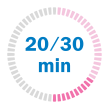
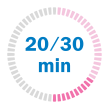

¿Qué comprende el estudio el primer día?

Entrevista con nuestros gineco - obstetras especializados
Examen ginecológico para descartar sospechas
La consulta no incluye informe médico
 

¿En cuánto
tiempo se realiza?
La duración de la consulta
es de 20 a 30 minutos

¿Qué precio tiene?
S/ 120
Atención en niñas y adolescentes
Una consulta especializada se recomienda ante signos de alerta tales como:
Flujo vaginal de cualquier tipo en la niña
parición de caracteres sexuales secundarios antes de los 8 años (Sospecha de pubertad precoz)
Alteraciones en la menstruación en la adolescente (Dolor intenso, sangrados abundantes o irregulares)
Otras condiciones que consideren sale de la norma